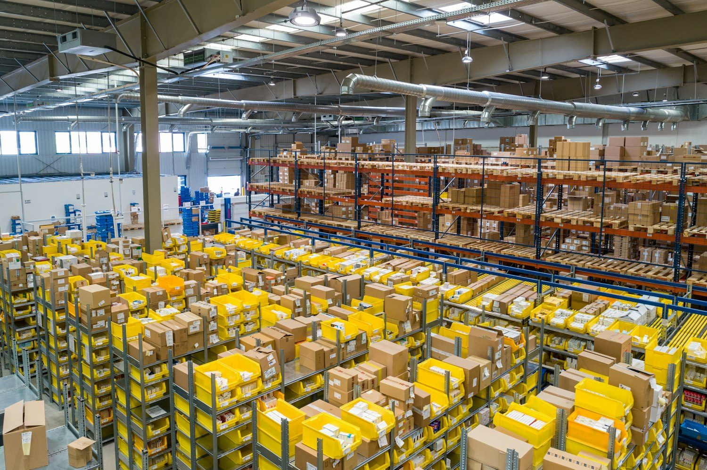
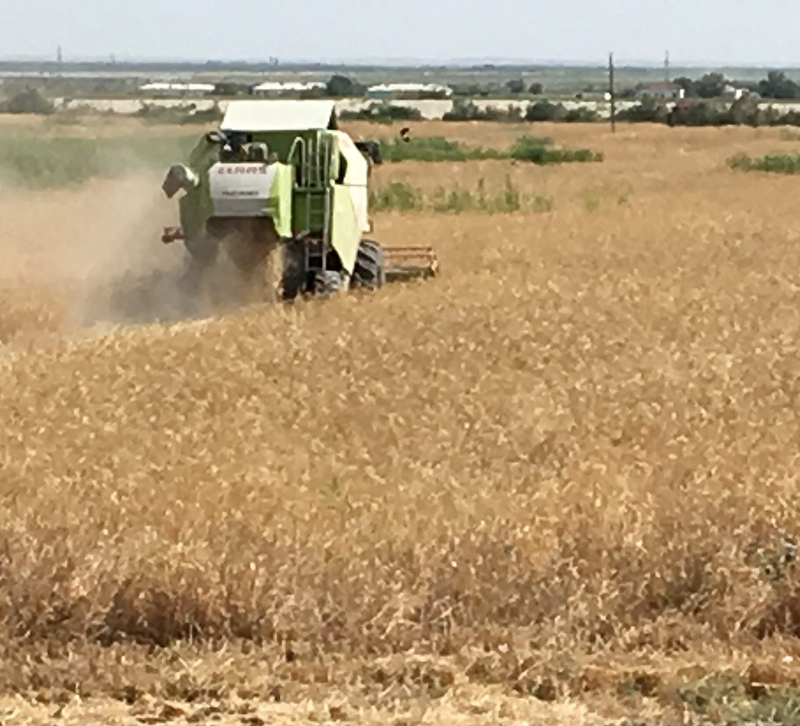

A sample, a ticket, a lot
Use the same lot reference for the grain photo, moisture sheet and dispatch record.
For grain aggregators and warehouse quality teams. GrainLedger checks standardized grain photos, reads weight and moisture records, and flags lots that need a human quality check.

| LOT | WAREHOUSE | TONNES | REVIEW |
|---|---|---|---|
| Maize · Grade AGL-201 | Zaria · Bay 01 | 30 | Needs review |
| Paddy rice · Grade BGL-202 | Kebbi · Bay 03 | 26.5 | Scheduled |
| Soybean · Grade AGL-203 | Makurdi · Bay 02 | 28 | Reconciled |
| Sorghum · Grade AGL-204 | Kano · Bay 01 | 24 | Reconciled |
| Maize · Grade BGL-205 | Zaria · Bay 04 | 32 | Needs review |
| Paddy rice · Grade AGL-206 | Kebbi · Bay 02 | 25 | Reconciled |
| Millet · Grade AGL-207 | Kano · Bay 05 | 22 | Scheduled |
| Soybean · Grade BGL-208 | Makurdi · Bay 04 | 27 | Needs review |

The sample intake contains a 0.6-tonne difference. The useful AI task is to read the related tickets and put the discrepancy beside the quality check.
Inspect the two source records
Use the same lot reference for the grain photo, moisture sheet and dispatch record.
A visual grading flag and a weight discrepancy need different checks, but the same intake decision.
The quality manager confirms the physical sample and the reconciled quantity.
AI reviews grain photos and intake documents before a lot is released. Choose a sample case and inspect the evidence behind the finding.
The standardized sample photo contains visibly broken kernels in the marked region. Lighting and sampling conditions require confirmation before assigning a commercial grade.
Evidence is prepared for this demonstration. Use the source reference to check the finding.See how the source becomes a specific question, a cited observation and a next action.
photo & page reviews per month in the stated deployment scenario.
64 organizations × 18 deliveries per warehouse / day × 26 receiving days / month × 12 photos and pages per delivery.
Planning scenario. This is an estimate, not measured customer traffic or Azure consumption.Visual grading is a screening step. A warehouse specialist confirms the grade, sampling method and test results.